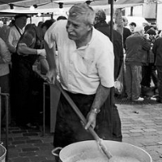
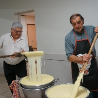
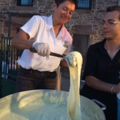

Ce restaurant, fondé en 1950 parChantal et René MONTEILLET. Sur laphotographie, ils ont tous deux 23 ans.

Par la suite, c’est Georgette et Louis MONTEILLET qui ont repris le restaurant pendant 45 ans.

A gauche, mon oncle Jean-Pierre MONTEILLET qui a tenu le restaurant 10 ans, avec sur la droite mon père, Alain MONTEILLET

Ma mère, Véronique MONTEILLET, à côté de mon frère Patrick MONTEILLET, servant mon premier aligot en 2019